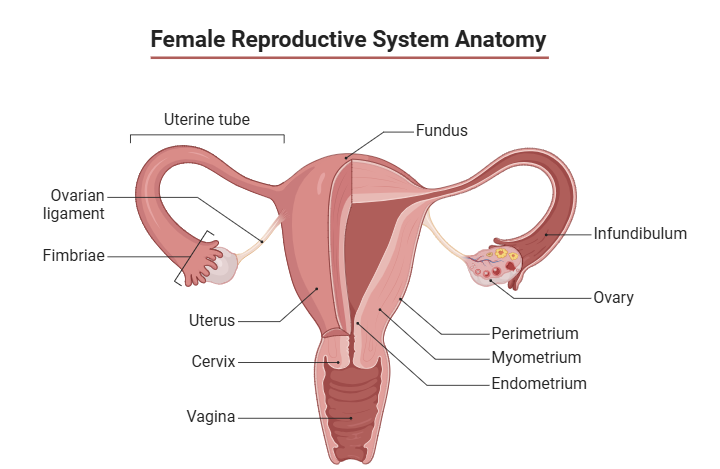

Cervical cancer is cancer that starts in the cells of the cervix. The cervix is the lower, narrow end of the uterus (womb). The cervix connects the uterus to the vagina (birth canal). Cervical cancer usually develops slowly over time. Before cancer appears in the cervix, the cells of the cervix go through changes known as dysplasia, in which abnormal cells begin to appear in the cervical tissue. Over time, if not destroyed or removed, the abnormal cells may become cancer cells and start to grow and spread more deeply into the cervix and to surrounding areas.
Anatomy of the female reproductive system The organs in the female reproductive system include the uterus, ovaries, fallopian tubes, cervix, and vagina. The uterus has a muscular outer layer called the myometrium and an inner lining called the endometrium.
The cervix has two main parts:
The ectocervix (also called exocervix) is the outer part of the cervix that can be seen during a gynecologic exam. The ectocervix is covered with thin, flat cells called squamous cells.
The endocervix is the inner part of the cervix that forms a canal that connects the vagina to the uterus. The endocervix is covered with column-shaped glandular cells that make mucus.
The squamocolumnar junction (also called the transformation zone) is the border where the endocervix and ectocervix meet. Most cervical cancers begin in this area.
Anatomy of the cervix: The cervix is the lower, narrow end of the uterus that connects the uterus to the vagina. It is made up of the internal OS (the opening between the cervix and the upper part of the uterus), the endocervix (the inner part of the cervix that forms the endocervical canal), the ectocervix (the outer part of the cervix that opens into the vagina) and the external OS (the opening between the cervix and vagina). The area where the endocervix and ectocervix meet is called the squamocolumnar junction, which contains both glandular cells (column-shaped cells that make mucus) from the endocervix and squamous cells (thin, flat cells) from the ectocervix. The squamocolumnar junction is sometimes referred to as the transformation zone.
Types of cervical cancer
Cervical cancers are named after the type of cell where the cancer started. The two main types are:
Squamous cell carcinoma: Most cervical cancers (up to 90%) are squamous cell carcinomas. These cancers develop from cells in the ectocervix.
Adenocarcinoma: Cervical adenocarcinomas develop in the glandular cells of the endocervix. Clear cell adenocarcinoma, also called clear cell carcinoma or mesonephroma, is a rare type of cervical adenocarcinoma.
Sometimes, cervical cancer has features of both squamous cell carcinoma and adenocarcinoma. This is called mixed carcinoma or adenosquamous carcinoma. Very rarely, cancer develops in other cells in the cervix.Source